~14 Responsive Sites~
10/7/2024
Project Page Responsive Design
Creating a Mixin for Super small screens
To get to the code for this tutorial
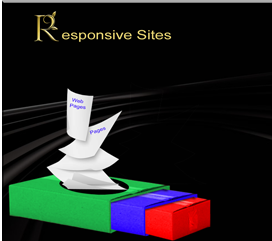
Turn on Sass
In Visual Studio
Remember to turn on your Watch Sass
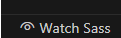
Adding a Mixin
Go to your config.scss partial file
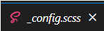
You will want to add the following code to the bottom of that file, after all of the other code that is in that config file.
@mixin media-md{
@media screen and (min-width: 768px) {
@content;
}
}
Copy and Paste 2 more Sizes
Make these changes to the new two media queries
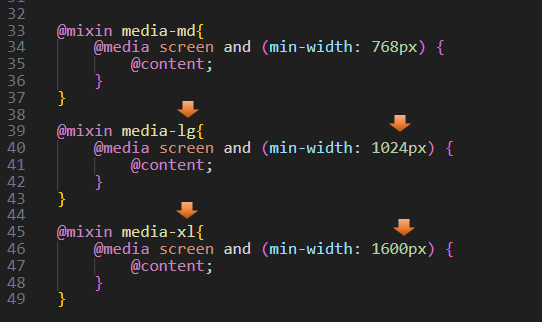
Start a New Partial responsive.scss File
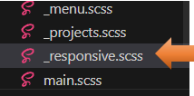
Go to the main.scss file
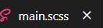
@import new File in main.scss
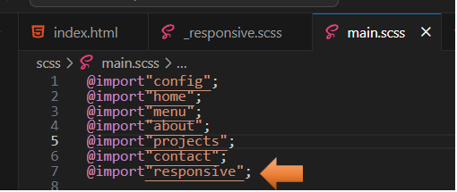
Home Page responsive design
The Medium Media Query
Go to Your Partial responsive.scss File
We will begin to write our code for the home page.
Start by @including your mixin media queries. Start with the smaller sizes and work our way up
@include media-md {
}
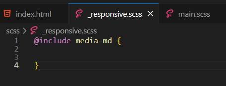
Now start to write your code inside of this media query
@include media-md {
.menu-btn {
visibility: hidden;
}
.nav {
visibility: visible;
.menu-nav {
display: block;
transform: translateY(0);
height: 100%;
background:transparent;
text-align: right;
&__item {
display: inline;
padding-right: 1.5rem;
}
&__link {
font-size: 1.5 rem;
}
}
}
}
Test the Page
Go to index.html to test the page. You will notice when we hit a wider screen size, the layout will change from viewing the small hamburger menu to a navigational menu across the top of the page.
Smaller device design

Wider device design
About Page Responsive Design
On this page, we will be making the text just a bit bigger as we go from a smaller device to a wider screen size.
Still in your responsive.scss partial file. We want to still be inside of the media queries, so start your code right before that closing curly brace.
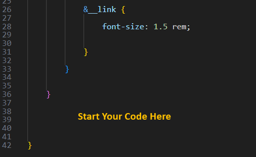
.about__bio {
font-size: 1.5rem;
}
Project Page Responsive Design
Again, you will want to be inside of that same media code and then start writing your code right before the closing curly brace again.
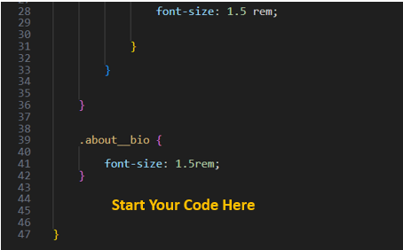
.projects {
&__bio-image {
height: 55vh;
}
&__items {
grid-template-columns: repeat(2, 1fr);
}
.text-secondary {
font-size: 3rem;
}
}
Test the Medium Projects page
Save and see what we have for our projects page
The next images are demostrating the small and medium device layout for your site.
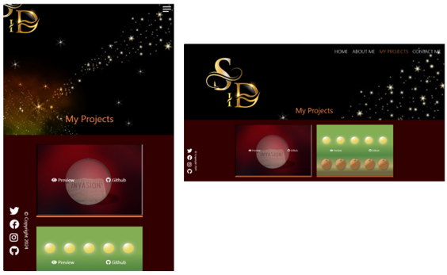
Projects page Sass Code Continued
You are still inside of the last curly brace for the medium Media Query
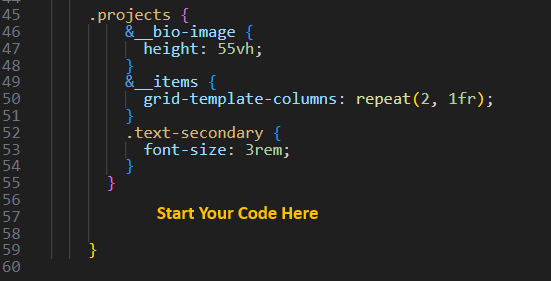
.contact__list {
grid-template-columns: repeat(2, 1fr);
}
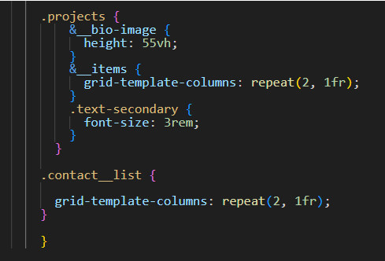
The Large Media Query
We are still working on the Responsive file, but since we are starting a brand-new media query, we want to make sure we are below any of our previous closing curly braces.
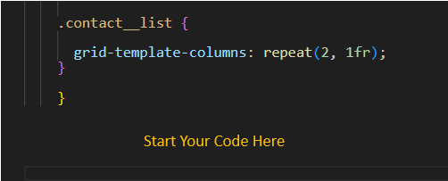
Projects page
Let’s start working in our responsive file for the Projects page. We want our project page to go to three columns on the large screen size for the portfolio images on that page.
@include media-lg {
.projects {
&__items {
grid-template-columns: repeat(3, 1fr);
}
}
}
Notice that when we want our images to show three across, we have changed our repeat to 3. So, that is where the code is that will control that section of our layout.
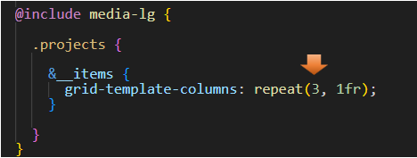
Testing the Large screen Page
Large, Medium and Small device Layout of our site.
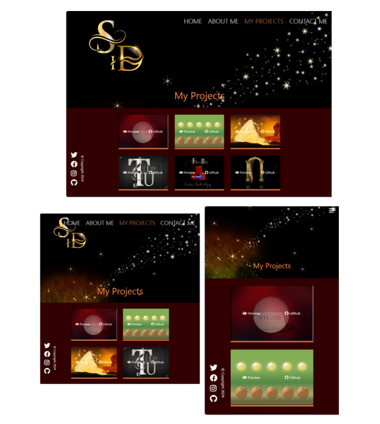
The Contact Page
You are starting this code, before the closing curly brace of the media-lg media query.
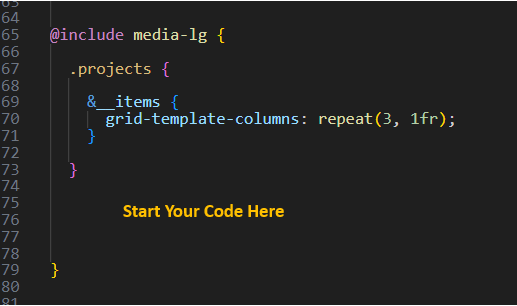
.contact__list {
grid-template-columns: repeat(3, 1fr);
}
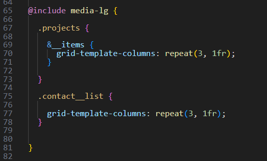
Extra Large Project Page
You will see that the letters of the logo are cut off just a bit in the extra-large size of screen
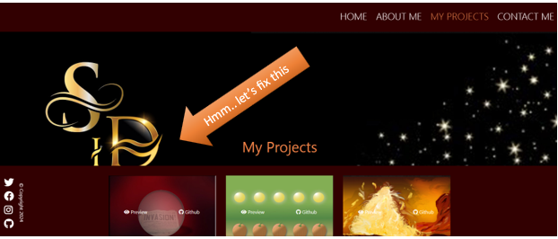
So, to fix this we want to make the image’s height a bit larger.
@include media-xl{
.projects__bio-image {
height: 70vh;
}
}
At the very bottom of the Responsive page file, we will put this code
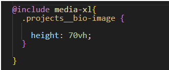
Now the gold letter logo fits on the page.
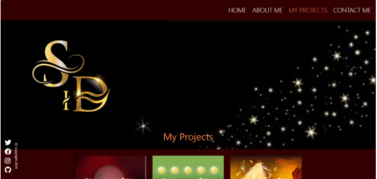
The About Page
We found that we had the same problem with the logo cutting off on the about page. See how the text for the BIO in this section, goes over the gold letter logo
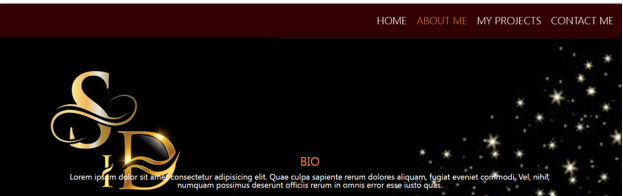
So, we will need to write some code to make changes to the about page layout, as well.
.about__bio-image {
height: 70vh;
}
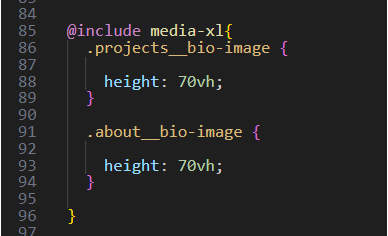
Now that looks a bit better.
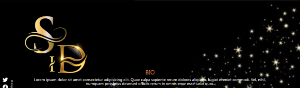
Creating a Mixin for Super small screens
Most phones will probably not be this small and you will not have this issue with your layout. However, you might find you have this problem while testing, even if it, more than likely will not be an issue for your users, or once you are using an actual cell phone.
However, if I was to test on the desktop for the smallest cell phone size, it will reduce smaller than a phone, and I would have this issue with the layout. I could just redesign my image and pull the logo to the right in Photoshop, but I also could just create a mixin for this smaller size issue.
In your config partial file
You will want to add this new smaller rule to your mixins. Some of you might be asking why we just did not make this change in our medium sized query. The reason that we could not just make the changes to the bio image in the medium sized mixin rule, and need to create a new rule is because creating the rule there, would mess with our hamburger menu, and you would no longer see it at your smaller cell phone levels. And that is something that would not work for us at all.
So, let’s start writing that smaller mixin.
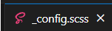
@mixin media-sm{
@media screen and (min-width: 400px) {
@content;
}
}
In Your responsive partial file
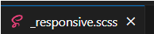
Put this code at the very top of the file. It is very important that we keep this code in order by size, or things will break. So, the smallest media size is at the top of the file, and we work our way to the bottom and the largest sized for our media queries.
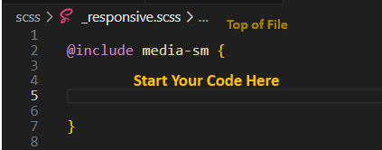
.projects {
&__bio-image {
width: 130vw;
}
}
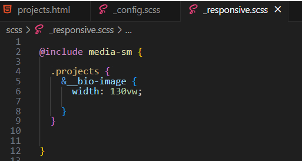
Testing
Now if we test that at a small size it is fixed, and our hamburger menu is still the navigational method that is visible.
To get to the code for this tutorial